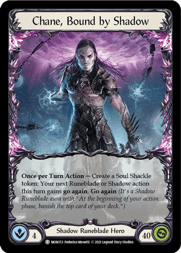

Flesh and Blood
Chane, Bound by Shadow decklist
Below I will show a standard decklist, showcasing one of the heroes found in Flesh and Blood: Chane, Bound by Shadow.

Equipment
Aether Ironweave
Arcanite Skullcap
Carrion Husk
Crown of Dichotomy
Grasp of the Arknight
Spellbound Creepers
Red Pitch
3 Belittle
3 Bounding Demigon
3 Command and Conquer
3 Enlightened Strike
2 Flock of the Feather Walkers
3 Ghostly Visit
3 Howl from Beyond
2 Minnowism
3 Revel in Runeblood
3 Rift Bind
3 Runic Reclamation
3 Shadow Puppetry
1 Soul Reaping
3 Unhallowed Rites
Yellow Pitch
3 Art of War
1 Bounding Demigon
3 Captain's Call
1 Seeping Shadows
Blue Pitch
3 Bounding Demigon
1 Captain's Call
1 Eclipse
2 Flock of the Feather Walkers
2 Invert Existence
3 Mauvrion Skies
3 Minnowism
3 Shadow of Ursur
3 Shrill of Skullform
2 Timesnap Potion
3 Vexing Malice
Special
Gorganian Tome